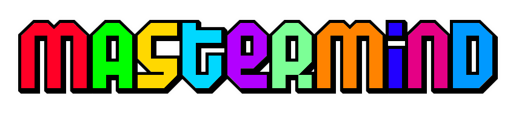

Welcome to the Mastermind Online Playing Guide!
We welcome you to Mastermind! If you have played Mastermind before, you might've noticed that our version is a little bit different. Let's take a step back, we will explain everything there is to know.
How to connect?
Here at Mastermind Online, we have two different ways for you to start a game.
Matchmaking!
This option will enable you to to connect and search for a random player.
- To launch this option, click "Play" from the main menu.
- Once this is done, you will be able to choose your secret colour code combination. In the meanwhile, you will be waiting for a second player to also launch a match.
- As soon as both players decided on their code, and confirmed their choice by pressing "Confirm Colour Code", the match will start!
Play offline!
As the title says, this option lets you play against the computer!
- To launch this option, click "Play Offline" from the main menu.
- You will notice that the game starts as soon as you click "Play Offline". This is normal.
- Once the game starts, you are ready to start trying to crack the code!
How to Play?
The game is simple. Both players choose a colour combination, their goal is to crack each others code. The first to do so, wins the game. In this section we dive deeper into the details of each of the games functions and rules.
- Each player gets to choose a "Colour Code Combination", a player has a choice of eight different colours to customize their four unit combination code.
- The same colour can be choosen for multiple slots. For instance, a player could pick green four times such that his code is simply four times green.
- Once the game starts, you will see a "Mastermind" board, in which you can try to guess and crack the "Colour Code Combination" of your opponents code. You can do so by clicking on the individual colours and placing them in their slots.
- Click the "Check" button to submit your guess, wait for your opponent to submit his guess for both players to advance to the next round.
- Keep in mind, the order in which you choose your own colour code, and the guessing of your opponents code are of great importance. For example, "Blue" "Blue" "Blue" "Green" will not be a correct guess for a "Blue" "Green" "Blue" "Blue" code.
- Under the "Check" button, you will notice a small cube. In no particular order will the cube tell you how many correct guesses you have made by lighting the red dots. If there are 3 red dots, it indicates that you made 3 correct guesses. Keep going!
- There are a total of 10 rounds for either of the players to guess their opponents code correctly. If neither guesses correctly, the match will result in a draw.
- You can see your a mini mastermind board on the right hand sight of the screen, this board displays the guesses your opponents submits.
- The mini mastermind board also displays your choosen "Colour Code Combination", don't worry, you're the only one that can see the code. Your opponent is seeing his own code.
- As soon as one of the players guesses correctly, he wins. Therefore, not only do rounds mather, but the speed in which you submit "Check" your opponents code does as well. For instance, both players guess correctly on the first round, the first to submit the guess wins.
- You will be redirected to the main menu within 5 seconds after the winning guess has been submitted, from which you can start a new game!
The Console
The Console is there to help the player, it delivers valuable information.
For instance, the console informs the player if a second player entered the matchmaking process, who the winning player is, when the game started, what your guesses are, how many rounds remain and more. So if you haven't already figured out, the console is pretty useful!